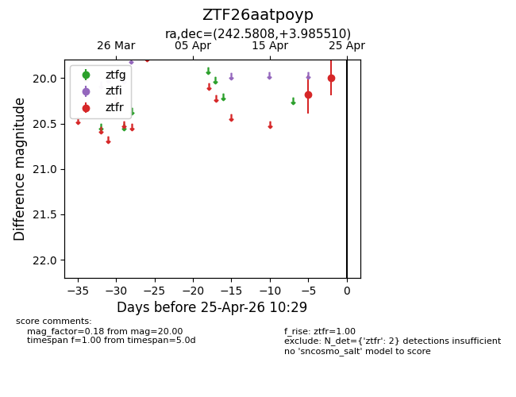
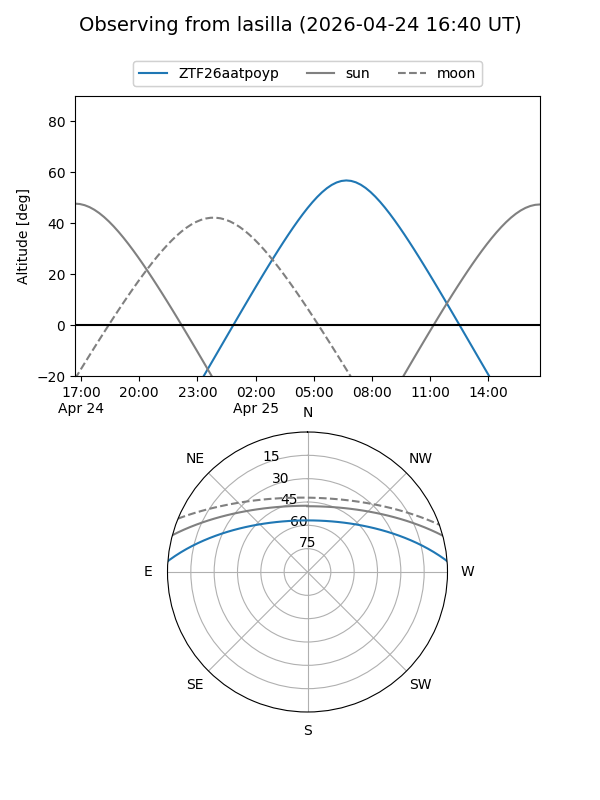
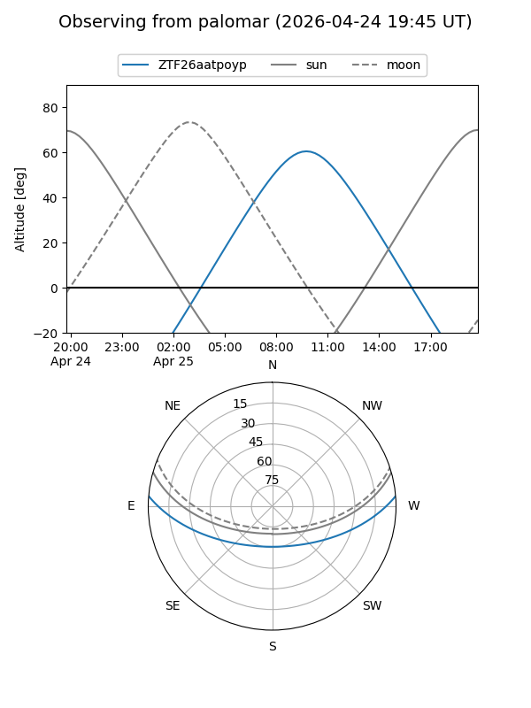

ZTF26aatpoyp
Target ZTF26aatpoyp at 2026-04-25 10:31
Aliases and brokers:
FINK: link
Lasair: link
ALeRCE: link
alt names
ZTF26aatpoyp (ztf,fink_ztf)
Coordinates:
equatorial (ra, dec) = 242.5808,+3.98551
equatorial (HMS+DMS) = 16:10:19.39,+03:59:07.84
galactic (l, b) = (15.9633,+37.27808)
Flags:
Photometry:
last ztfr=20.00
2 ztfr detections
Lightcurve

Visibility


Additional plots